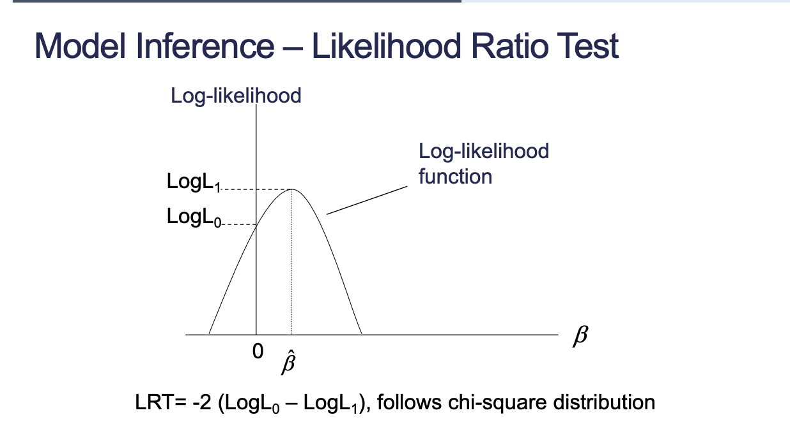
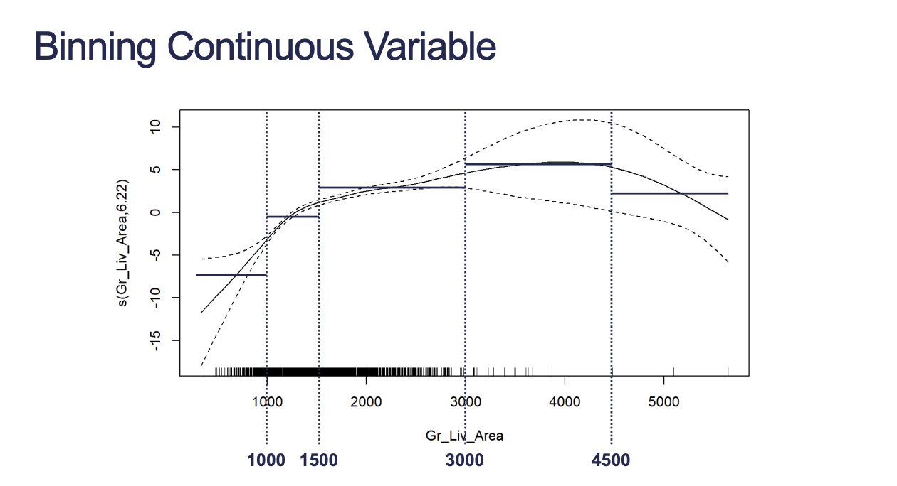

In logistic regression, the assumptions of residual Normality and constant variance are violated. OLS is not the best method for parameter estimation.
1 Maximum Likelihood Estimation
Estimates are obtained with maximum likelihood estimation (MLE). Likelihood function measures how probable a specific grid of \(\beta\) values is to have produced you data.
Likelihood estimation allows us to do hypothesis testing. If extra predictors don’t add information, then a model that includes them shouldn’t be substantially more likely than the moel that doesn’t include them.
Likelihood Ratio Test (LRT) compares the full and reduced models.

Likelihood Ratio Test
\(L_0\) is the reduced model and \(L_1\) is the full model.
Warning: Maximum number of iterations has been exceeded.
Current function value: 0.425703
Iterations: 35
/opt/homebrew/Caskroom/miniconda/base/envs/msa/lib/python3.11/site-packages/statsmodels/base/model.py:607: ConvergenceWarning: Maximum Likelihood optimization failed to converge. Check mle_retvals
warnings.warn("Maximum Likelihood optimization failed to "
Always check the difference in degrees of freedom to double-check if you are comparing the right number of variables (how many levels are in the additional variable you are including?).
1.2 Categorical P-Values
For categorical variables with more than 2 levels we shouldn’t evaluate the significance of the entire variable with the individual p-values. Use LRT to compare model with and without the categorical variable since LRT compares the model with ALL the levels included against the model with ALL the levels not included.
Code
logit_model_f <-glm(Bonus ~ Gr_Liv_Area +factor(Central_Air) +factor(Fireplaces), data = train, family =binomial(link ="logit"))car::Anova(logit_model_f, test ="LR", type ="III")
Unlike categorical variables, we need to test for linearity of the continuous variables with the logit.
2.1 General Additive Model (GAM)
The idea: We want to fit the best curve for our target and then we run a statistical test to see if it our fitted curve is any better than just a straight line relationship. If it is better, then our assumption of linearity is not met.
The spline p-value is not telling us whether our assumption is met or not. It tells us whether or not the splined variable is significant in the model.
edf in the splined variable is the polynomial degree that the fit thinks we should have. In theory, if the relationship was close to a straight line then edf would be close to 1.
How do we actually test if our variable satisfies the linearity assumption?
If our p-value is significant, then it means our two models are significantly different. If our two models are significantly different, then our curve model is providing more information than a straight line. Assumption is not met.
In conclusion, high p-value means our assumption is met, else not met.
2.1.1 Linearity Assumption Failed?
Use GAM logistic model instead with more limited interpretation on variables that break assumption
Bin the continuous variables that break assumption (keeps interpretation)

Binning Continuous Variable
Code
train <- train %>%mutate(Gr_Liv_Area_BIN =cut(Gr_Liv_Area, breaks =c(-Inf, 1000, 1500, 3000, 4500, Inf)))logit_model_bin <-glm(Bonus ~factor(Gr_Liv_Area_BIN) +factor(Central_Air), data = train, family =binomial())summary(logit_model_bin)
Call:
glm(formula = Bonus ~ factor(Gr_Liv_Area_BIN) + factor(Central_Air),
family = binomial(), data = train)
Coefficients:
Estimate Std. Error z value Pr(>|z|)
(Intercept) -8.8210 1.1065 -7.972 1.56e-15 ***
factor(Gr_Liv_Area_BIN)(1e+03,1.5e+03] 4.5121 1.0052 4.489 7.16e-06 ***
factor(Gr_Liv_Area_BIN)(1.5e+03,3e+03] 6.6437 1.0049 6.611 3.81e-11 ***
factor(Gr_Liv_Area_BIN)(3e+03,4.5e+03] 21.1646 363.8508 0.058 0.95361
factor(Gr_Liv_Area_BIN)(4.5e+03, Inf] 5.5986 1.7331 3.230 0.00124 **
factor(Central_Air)Y 3.2224 0.4734 6.807 9.95e-12 ***
---
Signif. codes: 0 '***' 0.001 '**' 0.01 '*' 0.05 '.' 0.1 ' ' 1
(Dispersion parameter for binomial family taken to be 1)
Null deviance: 2775.8 on 2050 degrees of freedom
Residual deviance: 1892.0 on 2045 degrees of freedom
AIC: 1904
Number of Fisher Scoring iterations: 14
Note that binning a continuous variable results in an ordinal variable.